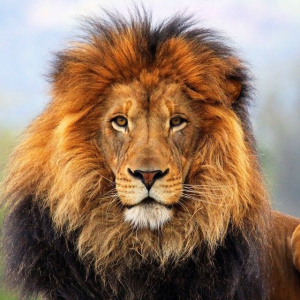

Lion
Even though the lion is sometimes referred to as the “king of the jungle,” it actually only lives in grasslands and plains. The expression may have come from an incorrect association between Africa and jungles or may refer to a less literal meaning of the word jungle.
- Scientific Name: Panthera Leo
- Average Length: Mail (2.5 mts)
- Avegare Lifespan: 10-14 years
- Habitat: Africa and Asia mostly
A lioness is ready to have young when she is 2-3 years old. Baby lions are called cubs. Cubs are born after 3 1/2 months. The cubs are born blind; their eyes do not open until they are about a week old, and cannot see well until they are about two weeks old.